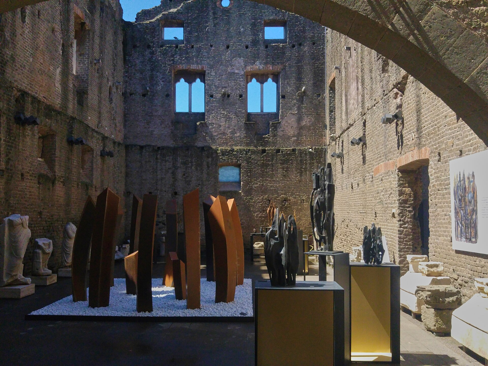

古罗马第一条军用大道，公元前 312 年由监察官阿皮乌斯·克劳狄乌斯主持修建，从罗马直通布林迪西。今天保存最好的一段仍在城郊：原始火山岩路面、车辙凹槽、两侧的古墓与地下墓穴——罗马人的一生（与死后）都在路边。
看点路线
Il Percorso
- 1Domine Quo Vadis 小教堂：圣彼得逃亡传说的发生地
- 2圣卡利斯托地下墓穴：早期教皇墓地，导览下行 20 米
- 3切奇利娅·梅特拉陵墓：大道最经典地标，拜伦写进过诗里
- 4罗马公园段（第 3-5 英里）：原始火山岩路面 + 松柏林荫，骑行天堂
沿途看点
La Regina Viarum · 5 处路边的两千年
原始火山岩路面
巨大的火山岩块拼接成路，两千年的马车与坦克在上面压出凹槽。跪下来摸一块——罗马道路的秘密是三层路基：碎石、混凝土、面石，最后用火山灰砂浆灌缝。这套工艺让路“活”过帝国本身。
Domine Quo Vadis 教堂
传说圣彼得为躲避尼禄迫害逃离罗马，在这条路上遇见迎面而来的基督：“主啊，你去哪里？”“去罗马，再被钉一次十字架。”彼得羞愧折返，最终倒钉殉道。教堂内藏一块大理石，上有一双“基督的脚印”复制品。
圣卡利斯托地下墓穴
四层隧道、总长 20 公里，16 位早期教皇与数十万基督徒葬于此。导览会指给你看墙上最朴素的暗号：鱼（希腊文“耶稣基督上帝之子救主”的缩写）与锚——迫害年代的地下语言。

切奇利娅·梅特拉陵墓
直径 20 米的圆筒形陵墓，主人是克拉苏的儿媳。中世纪它被凯塔尼家族改成堡垒塔楼，顶部的垛口至今可见——一座贵妇的坟墓，死后一千年还被征用参军。拜伦在《恰尔德·哈洛尔德》里为它写过整节诗。
路侧的墓群
罗马法律规定城内禁葬，死者都住在城外的大道两侧——越有钱离路越近，等于是给自己立永久广告牌。走这条路等于走一条两千年的“名人墓道”：你路过的是古罗马人的整个身后世界。
历史故事
Le Storie
壹路是怎样修成的
公元前 312 年，盲眼监察官阿皮乌斯·克劳狄乌斯干了一件战略级的事：把路修直。军队调动速度翻倍，萨莫奈战争的天平就此倾斜。
罗马道路是帝国的神经网络：八万公里干道，不列颠到美索不达米亚都在同一张网里。“里程碑”（milestone）这个词就诞生于此--每罗马里（mille passus，一千步）立一块，刻着到罗马的距离。
工程质量有多好？两千年的雨、坦克、旅游鞋之后，你今天踩的仍然是公元前铺下的石头。
贰斯巴达克思的十字架
公元前 71 年，奴隶起义领袖斯巴达克斯战败。克拉苏把六千名俘虏沿阿皮亚大道从卡普阿钉到罗马--每 40 米一个十字架，血路绵延 200 公里。
你今天骑行经过的某些路段，可能就是当年行刑的现场。罗马大道既是文明的动脉，也是权力的展柜--同一条路，送过凯旋的军团，也钉过造反的奴隶。
斯巴达克思在起兵时说过一句后来被反复引用的话：“宁为自由人战死，不为角斗士取乐。”为他收尸的路，就是这条阿皮亚。
叁盲眼监察官
阿皮乌斯·克劳狄乌斯晚年失明，却以监察官身份干了两大工程：这条大道与罗马第一条高架渡槽（阿皮亚水道）--都在他失明后完成。
同僚劝他休息，他的回答成为罗马式的格言：“盲人也要为国家掌灯。”他终生以强硬著称，直到临终前还在为 Hannibal 战争出主意。
道路以他命名而不是以皇帝命名，在罗马是罕见的荣誉。走在路上想一想：一条直线的坚持者，自己看不见这条直线。
肆主啊，你去哪里
传说公元 64 年罗马大火后的迫害中，圣彼得逃离罗马，在这条路上遇见迎面而来的基督：“主啊，你去哪里？”（Domine, quo vadis?）“去罗马，再被钉一次十字架。”
彼得羞愧折返，最终在梵蒂冈山倒钉殉道。路边的小教堂里，藏着一块大理石上的“基督脚印”复制品（原件在圣塞巴斯蒂安教堂地下）。
这个传说是这条古道最著名的心跳时刻：一个逃跑的人，因为一句话回了头。
伍地下墓穴的暗号
地下的基督徒用符号说话：一条鱼（希腊文“耶稣基督上帝之子救主”的字母缩写）、一只锚（伪装成船具的十字架）、一个扛羊的好牧人。
圣卡利斯托墓穴 20 公里隧道里，50 万人长眠，包括十余位早期教皇。墙上的蜡笔涂鸦与铭文，是基督教最早的“民间文献”。
导览会指给你看最朴素的一处：一个炭笔画的鱼。在禁止的年代，一句话说不得，就画一条鱼。
陆无名的贵妇
切奇利娅·梅特拉陵墓的主人是克拉苏的儿媳--除了这行身份，她的生平成谜：生卒不详、事迹不详，只留下 20 米直径、近千年不倒的圆筒。
中世纪它被凯塔尼家族改成堡垒塔楼；19 世纪浪漫主义诗人（拜伦、雪莱那一代）为她写诗--一位没有故事的贵妇，反而成了最有故事的废墟。
考古学家至今没找到她的墓室。一座为你保留谜底的陵墓：所有答案都还在石头里。
柒路的水管桥
大道旁并行着两条古罗马渡槽的遗址：克劳狄亚与阿尼奥·诺沃 共用同一座双层拱廊，横跨谷地。
坐在排水道的拱顶下抬头看：上层走一条水、下层走另一条，重力精确计算让两股水各走各的坡度--古代版的“立交桥+自来水厂”。
罗马人修路连水的物流一起解决。看一个文明的高度，就看它怎么处理“看不见的基础设施”。
捌1908：为一条路立法
1908 年，罗马的知识界发起“阿皮亚古道保卫战”：开发商想把古道两侧变成别墅区。律师与考古学家推动立法，把道路与两侧遗迹划入保护--意大利最早的文物保护运动之一。
此后古道公园（Parco Regionale dell'Appia Antica）逐步扩展：今天 340 公顷的公园里，跑步、骑行与考古共存。
你今天能在松林间骑车，是因为一百多年前一群人吵赢了开发商。古迹从来不是自然活下来的。
玖周日的圣街
每个周日，古道核心段限制机动车通行--石头路面重新还给行人、自行车与马拉观光车。罗马人拖家带口来这里散步，像祖辈两千年来的样子。
这个“步行日”是市民自己投票争取来的传统。清晨的修道院还唱格里高利圣歌，沿路的农庄卖起了当季无花果。
如果行程允许，把阿皮亚安排在周日：你将看到一条古道最接近“活着”的状态。
拾古道上的骑行经济
骑行是这条路的最佳打开方式：平直、遮阴、路面颠簸度友好。Domine Quo Vadis 一带的租车行 €10-15 一天，还附带手绘路线图。
骑到第三、四英里，车流消失，只剩松涛、石棺与蜥蜴--那是罗马近郊最安静的三公里，1960 年罗马奥运会的马拉松与竞走也选了这段路。
日落时分从 Cecilia Metella 回望罗马：圣彼得穹顶在松林尽头浮起--一条路看两个千年。
参观贴士
Consigli Pratici
- 最佳玩法：租自行车（Domine Quo Vadis 附近 €10-15/天），平直大道骑 5-10 km 轻松
- 墓穴必须跟导览团，不接受散客；周日多数墓穴闭
- 道路两侧石棺与遗迹不要攀爬（罚款 €400+）
- 周日机动车限行，是徒步与骑行的黄金日；10 月白天温暖，注意防晒
- 拼一段 Appia Antica Regional Park 的松林荫道，是罗马最上镜的林荫路之一
顺路同游
Da Non Perdere